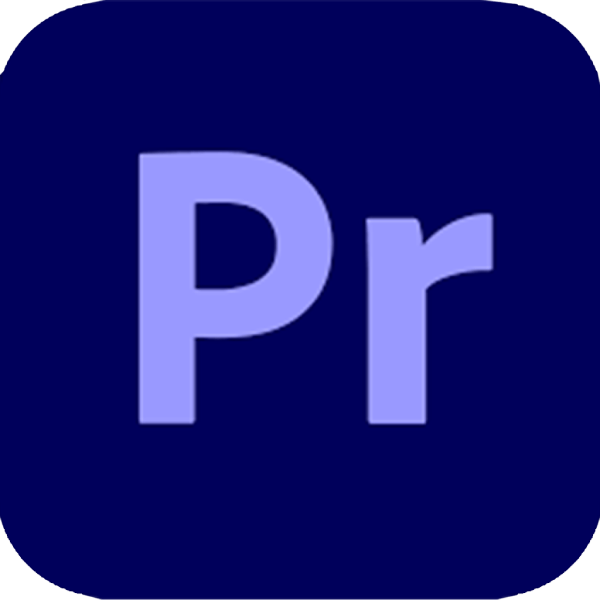
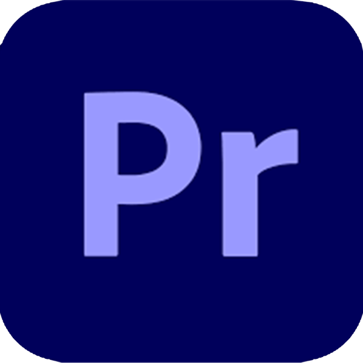

Olá, me chamo
Diogo Carvalho Viegas
Eu sou um Analista e Desenvolvedor de sistemas.
Eu comecei minha carreira como programador com a linguagem de programação C. Desde então venho aprendendo e expandindo o meu conhecimento. Este é meu portfólio que criei não só para mostrar meu conhecimento HTML/CSS, tanto como minha habilidade como designer gráfico. Estou procurando novas oportunidades de trabalho e aberto para criar novos projetos. Atualmente cursando um curso de ensino superior de Análise e Desenvolvimento de sistemas em IFSUL Campus Camaquã.


 
